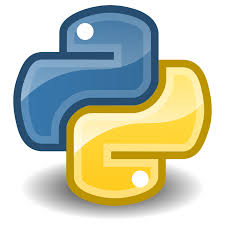
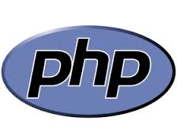
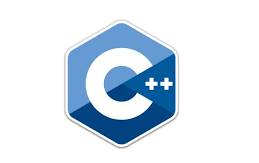

PYTHOM

Python é uma linguagem de programação de alto nível, de fácil leitura e sintaxe simples. Ela é conhecida
por
sua versatilidade e é usada em diversas áreas, como desenvolvimento web, automação de tarefas, análise
de
dados, inteligência artificial, aprendizado de máquina e muito mais. Python tem uma grande comunidade de
desenvolvedores e uma vasta gama de bibliotecas que tornam o desenvolvimento rápido e eficiente. Sua
simplicidade e clareza a tornam uma excelente escolha para iniciantes e profissionais.
PHP
PHP é uma linguagem de programação do lado do servidor usada principalmente para desenvolver páginas web
dinâmicas. Com PHP, é possível gerar conteúdo HTML de maneira dinâmica, processar dados de formulários,
interagir com bancos de dados e criar sistemas web complexos. Uma das suas maiores vantagens é a
facilidade de integração com sistemas de banco de dados, como MySQL, tornando-o uma escolha popular para
desenvolver sites dinâmicos e sistemas de gerenciamento de conteúdo (CMS) como o WordPress.

C++

C++ é uma linguagem de programação de propósito geral e orientada a objetos, derivada do C. É uma das
linguagens mais poderosas e flexíveis, usada em áreas que exigem alto desempenho, como jogos, sistemas
operacionais, softwares de edição de vídeo e outros aplicativos que precisam de controle detalhado sobre
os recursos de hardware. C++ permite o controle direto da memória e oferece um desempenho muito superior
em comparação com linguagens de alto nível, mas também exige maior cuidado com a gestão de recursos,
como memória..
C#
C# é uma linguagem de programação desenvolvida pela Microsoft como parte da plataforma .NET. Ela é usada
para desenvolver uma ampla gama de aplicativos, incluindo jogos (com Unity), aplicativos desktop,
sistemas web e serviços. C# é uma linguagem orientada a objetos e moderna, com uma sintaxe clara e
recursos poderosos como LINQ (Language Integrated Query), manipulação de eventos e tratamento de
exceções. Seu uso é predominante em ambientes que utilizam a plataforma .NET, sendo altamente integrada
com outras tecnologias da Microsoft.

HTML

HTML é uma linguagem de marcação usada para estruturar o conteúdo de páginas web. Ela define a estrutura
básica de um site, incluindo elementos como textos, imagens, links, formulários, tabelas e muito mais.
Embora não seja considerada uma linguagem de programação (pois não executa lógica), HTML é fundamental
para criar a base de qualquer página web. Ele usa "tags" ou "etiquetas" para definir diferentes tipos de
conteúdo e elementos
CSS
CSS é uma linguagem de estilo usada para descrever a apresentação visual de um documento HTML. Enquanto o
HTML define a estrutura da página, o CSS controla sua aparência, incluindo cores, fontes, layouts e
efeitos visuais como animações e transições. Com o CSS, é possível definir como os elementos HTML serão
exibidos em diferentes dispositivos e tamanhos de tela, criando designs responsivos e atraentes.

DART

Dart é uma linguagem de programação criada pela Google, focada em desempenho e versatilidade. É usada
principalmente com o framework Flutter para desenvolver aplicativos móveis, web e desktop. Dart é
orientada a objetos, com sintaxe semelhante a outras linguagens como Java e JavaScript. Ela permite
compilar tanto para código nativo (para iOS e Android) quanto para JavaScript, tornando-a ideal para
criar aplicativos rápidos e eficientes. Sua forte tipagem ajuda a evitar erros e facilita o
desenvolvimento.
JAVA SCRIPT
JavaScript é uma linguagem de programação usada para adicionar interatividade às páginas web. Ela permite
criar funcionalidades dinâmicas como validação de formulários, animações, interações com o usuário,
carregamento de dados sem recarregar a página (AJAX), entre outros. JavaScript é uma linguagem de
programação baseada em eventos e é executada no navegador do cliente, o que permite uma experiência web
mais fluida e interativa.